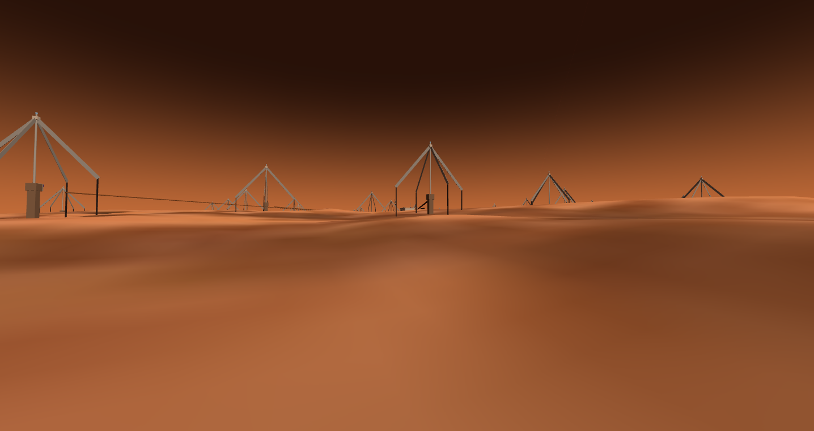
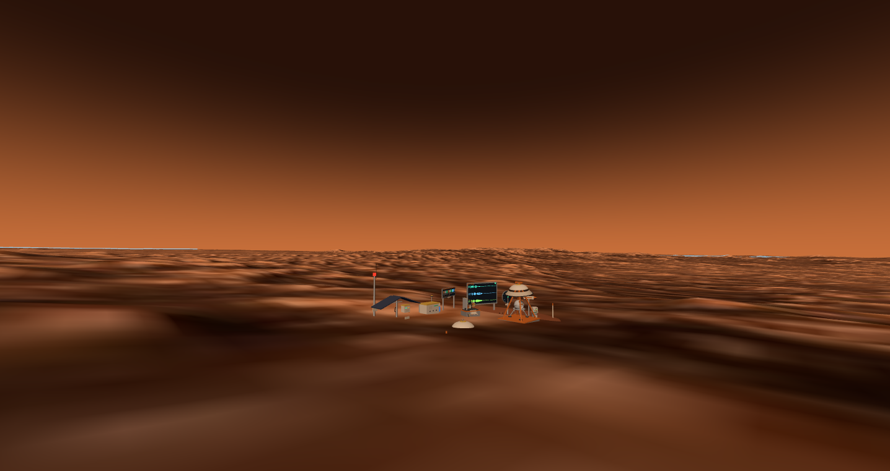
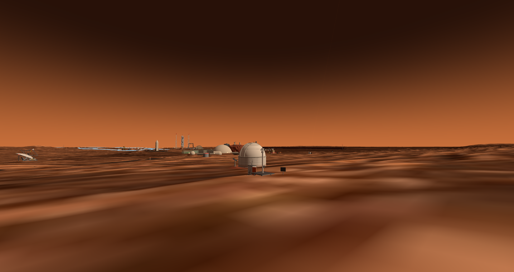
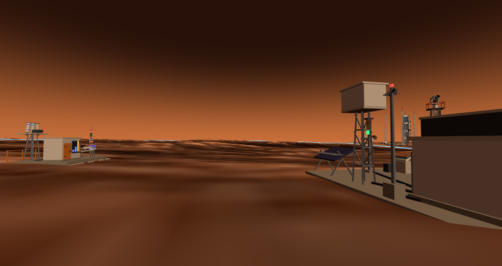

The environmental alert cluster, now five strong: weather mast, particle camera, thermal-IR tower, UV station, THz radiometer — dust, particles, heat, sunburn and water vapor on one alarm bus

sci-radio-01: 28 inverted-V dipoles across 160 m — listening where Earth is permanently deaf

sci-seis-01, the bonus channel: wind shield, hoisted-cover VBB cutaway, live seismogram — the quietest address in town

sci-swir-01 joins the observatory group — sited by the stray-light ledger: 5.8× darker skies for 1.27 µm airglow than the rodwell-side candidate

sci-uv-01 up close: three solar-blind probe tubes, spectrum screen, EVA alert column — beside the radiation station's SEP alarm tower
🔥 8–14 µmsci-ir-01 — VOx microbolometer, NETD 47.3 mK at f/1; the electro-thermal runaway ledger makes 512 rows @ 30 Hz a physics limit, not a spec choice
🟣 270 nmsci-uv-01 — home-grown Sentaurus AlGaN: R@270 = 0.117 A/W, solar-blind rejection >10⁵:1 — the EVA sunburn term finally has a sensor
💧 183 GHzsci-thz-01 — 10 pr-µm of water column read to 0.45% in 1 s; dust is transparent at 183 GHz, so in a storm the radiometer takes the weather watch
📷 0.9–1.7 µmsci-swir-01 — the Codex InGaAs bench, TCAD-closed: dark current is bulk GR, sidewall 8.3%; Mars night cold turns the frozen spec from unreachable to a factor of 7
📡 0.5–10 MHzsci-radio-01 — sky noise of 10⁵–10⁷ K means 0.7% antenna efficiency loses nothing; night observing window 97%, where Earth's is zero
🌍 not EMsci-seis-01 — a VBB under the wind shield, 11 ledgers and 65 gates green; the daily 14:00 launch doubles as a free repeating active source